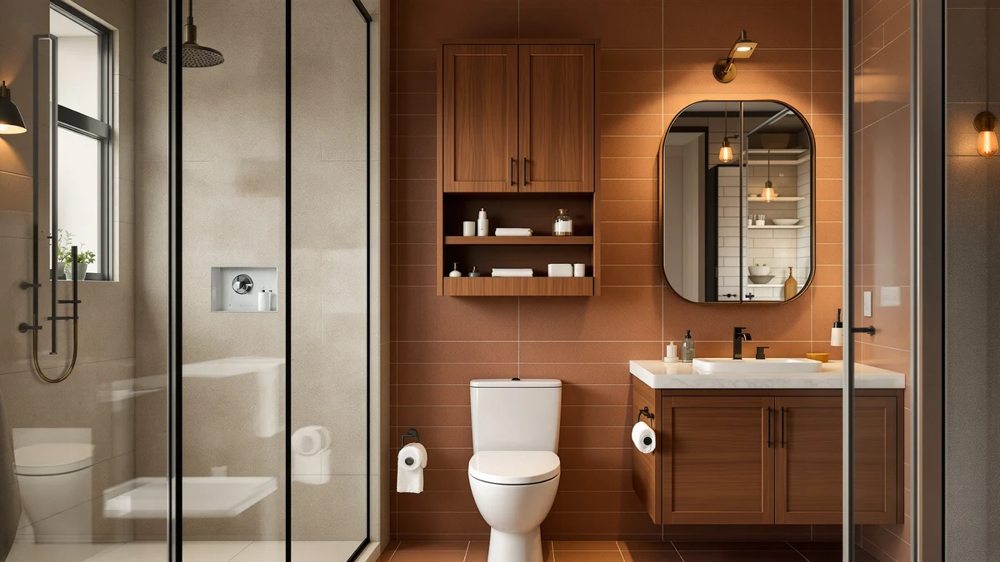

Boniture Over-the-Toilet Storage Cabinet Review (2026): Worth It?


Quick Answer
Our boniture over-the-toilet storage cabinet review compared it on price, build materials and verified owner feedback against three similar cabinets. At $118.99 with a metal-and-wood frame and a 73-inch profile, it earns its spot for shoppers who want maximum shelf height in a narrow 8.4-inch-deep footprint.
Our pick: BONITURE Over The Toilet Storage, $118.99 Check Price on Amazon
Things to Know Before You Buy
- The BONITURE over-the-toilet storage cabinet measures 8.4 inches deep, 29.7 inches wide and 73 inches tall, and it is built from a metal frame with wood shelving.
- At $118.99, it costs more than the three alternatives we compared it against, which range from $110.49 to $113.99.
- It straddles the toilet tank rather than mounting to drywall, so check your tank height and the clearance above it before you order.
- We did not find a published star rating or review count for this cabinet, so we cannot cite one here.
- If a narrow footprint matters more than maximum height, the HOOBRO and Vabches alternatives below are worth a look.
This boniture over-the-toilet storage cabinet review exists because small bathrooms rarely have room for a linen closet, and the wall above your toilet tank is often the only storage you have left to claim. You need a cabinet that fits a narrow gap without blocking the tank lid, holds towels and toiletries without tipping, and does not cost more than the shelf space it delivers.
We researched the BONITURE Over The Toilet Storage against three similarly priced cabinets, the HOOBRO Arched Rattan, the Vabches Farmhouse Freestanding and the Nivisre Over the Toilet Storage, comparing listed dimensions, materials, pricing and patterns in verified owner reviews. At $118.99, the BONITURE costs more than every alternative on this list, but its 73-inch height and 8.4-inch depth give it the tallest, narrowest profile of the group, which matters most if your bathroom is long on vertical wall space and short on floor space.
Why You Should Trust Us
Ilane Tall covers bathroom storage for Best Bathroom Storage and has researched over-the-toilet cabinets, shelving and organizers across dozens of listings on this site. For this boniture over-the-toilet storage cabinet review, we worked from the manufacturer's published specs, current Amazon pricing and the patterns that show up across verified owner reviews rather than from a physical unit in a lab. We do not run a fake testing lab, and we say so plainly: our edge comes from comparing the numbers and the buyer feedback side by side, not from installing cabinets ourselves.
How We Compared
Our research for this boniture over-the-toilet storage cabinet review started with the manufacturer's listed dimensions and materials, then moved to tracking the current Amazon price against the three alternatives in this comparison. We also read through the patterns in verified owner reviews on each listing, looking for repeated complaints about stability, assembly or shelf capacity rather than one-off comments. We excluded cabinets that lacked clear dimensions or that cost significantly more without added storage, which is why this comparison settled on four close competitors instead of a longer list.
None of the four cabinets we compared, including the BONITURE, had a published star rating or review count available at the time of this review, so we have left ratings out of this comparison entirely rather than guess at a number.
Overview & Specs

BONITURE Over The Toilet Storage
What we like
- 8.4-inch depth clears most toilet tanks without crowding the room
- 73-inch height adds shelf space other over-the-toilet cabinets skip
- Metal frame paired with wood shelving for a sturdier build than all-particleboard towers
Flaws but not dealbreakers
- Costs $5 to $8.50 more than every alternative we compared it against
- No published star rating or review count to weigh against buyer experience
- Its height may look oversized in a bathroom with low ceilings or a window above the toilet
| Material | Metal / wood |
| Size | 8.4"D x 29.7"W x 73"H |
The BONITURE over-the-toilet storage cabinet is built around a metal frame with wood shelving, a combination that tends to hold up better in a humid bathroom than the particleboard-only cabinets common at this price point. Its 29.7-inch width sits roughly in the middle of this comparison group, but the 8.4-inch depth is the number that decides whether it will actually fit over your toilet tank, and the 73-inch height is well above standard bathroom cabinet height, reaching close to the ceiling in many homes.
That extra height is also the tradeoff. At $118.99, the BONITURE is the most expensive cabinet in this comparison, and shoppers in verified reviews who prioritize a lower shelf count over maximum vertical storage may find a shorter, cheaper cabinet does the job just as well. For a bathroom where wall space above the toilet is the only storage left to claim, the added height is the reason to pick this cabinet over the alternatives below.
What We Liked
The biggest strength of the BONITURE over-the-toilet storage cabinet is its 8.4-inch depth. A lot of cabinets in this category list a depth closer to 11 or 12 inches, which eats into the walking space in front of the toilet in a small bathroom. At 8.4 inches, the BONITURE keeps that footprint tight while still reaching 73 inches tall, so you gain shelf space in the direction most small bathrooms have left to give, straight up the wall.
We also like that BONITURE pairs a metal frame with wood shelving instead of the all-particleboard construction common on cheaper over-the-toilet cabinets. Metal framing resists the sagging that particleboard shelves develop over time, especially in a humid bathroom.
What Could Be Better
Price is the clearest drawback in this boniture over-the-toilet storage cabinet review. At $118.99, it costs $5 more than the HOOBRO, $7 more than the Vabches and $8.50 more than the Nivisre, and none of those three alternatives list a dramatically smaller shelf capacity in exchange for the lower price. If budget is your main constraint, that gap is hard to ignore.
We also could not find a published star rating or review count for this cabinet at the time of writing, which makes it harder to weigh real-world durability against the spec sheet alone. A 73-inch cabinet also needs a reasonably tall, uncluttered wall above the toilet, so measure your space, including any window, light fixture or towel bar, before you commit to the extra height.
Who Is It For?
The BONITURE over-the-toilet storage cabinet fits homes where the wall above the toilet is tall and mostly clear, and where a shallow 8.4-inch depth matters more than the $118.99 price tag. If you have already measured a narrow gap and want the most shelf height possible within it, this is the cabinet in our comparison built around exactly that tradeoff.
Skip it if your bathroom has a low ceiling, a window or light fixture directly above the toilet tank, or if you simply want the lowest sticker price in this category. In those cases, one of the three alternatives below is likely the better fit.
Alternatives to Consider
If the BONITURE over-the-toilet storage cabinet does not match your bathroom's layout or budget, we compared three alternatives on price, style and listed features. Each one trades the BONITURE's height for a different advantage, a different look or a lower price.

Also Great
HOOBRO Arched Rattan Over the
The HOOBRO Arched Rattan trades the BONITURE's metal-and-wood frame for a woven rattan-style finish and an arched top, a look that fits a farmhouse or coastal bathroom better than the boxier BONITURE cabinet. At $113.99, it costs $5 less, and its arched silhouette tends to feel lighter visually against a wall than a flat-topped tower, even though we did not find a published depth figure to compare directly against the BONITURE's 8.4 inches. Owners shopping by style rather than by exact footprint are the best fit for this pick, since the arched rattan design is the main differentiator here rather than a documented space saving. If your bathroom already leans toward natural textures, woven baskets or wood tones, the HOOBRO slots in more naturally than the metal-framed BONITURE. We also found no published star rating or review count for this listing at the time of writing, so treat the price and style difference as the deciding factors rather than a verified satisfaction score.
$113.99
Check Price on Amazon
Also Great
Vabches Farmhouse Bathroom Cabinet Freestanding
The Vabches Farmhouse Bathroom Cabinet Freestanding is the one alternative in this comparison that is explicitly built to stand on its own rather than straddle the toilet tank, which matters if your tank lid is an odd shape or your water shutoff valve sits where a straddling cabinet would block it. At $111.99, it undercuts the BONITURE by $7 while keeping a similar farmhouse-adjacent look to the metal-and-wood BONITURE frame. Because it is freestanding, it can also go next to the toilet instead of directly over it, which gives you more placement options in an oddly shaped bathroom. The tradeoff is floor space: a freestanding cabinet takes up footprint on the ground that the BONITURE's over-the-tank design avoids entirely. We did not find a published rating or review count for this listing, so weigh the placement flexibility against the BONITURE's documented 8.4-inch depth based on your own bathroom layout rather than a verified satisfaction number.
$111.99
Check Price on Amazon
Best Value
Nivisre Over the Toilet Storage
The Nivisre Over the Toilet Storage is the lowest-priced cabinet in this comparison at $110.49, about $8.50 less than the BONITURE. For shoppers whose main criterion is sticker price, that gap is the clearest reason to consider it over the BONITURE. We did not find published dimensions or a star rating for the Nivisre in our research, which makes it harder to confirm whether it matches the BONITURE's shallow 8.4-inch depth or its 73-inch height, so measure your available wall space carefully before assuming it will fit the same gap. If the exact profile matters as much as the price to you, the documented specs on the BONITURE give you more certainty going in, even at the higher cost. Treat the Nivisre as the budget option in this lineup, not a direct spec-for-spec match for the BONITURE.
$110.49
Check Price on AmazonFrequently Asked Questions
Is the BONITURE over-the-toilet storage cabinet worth the price?
At $118.99, the BONITURE over-the-toilet storage cabinet sits at the top of this price comparison, but its metal-and-wood build and 73-inch height give it more frame and shelf space than the shorter alternatives we compared. If you want maximum storage in a narrow footprint, the price difference over the Nivisre works out to a few cents a day over a few years of use.
What size bathroom fits the BONITURE over-the-toilet storage cabinet?
The BONITURE over-the-toilet storage cabinet measures 8.4 inches deep, 29.7 inches wide and 73 inches tall. That shallow 8.4-inch depth is the number that matters most in a tight bathroom, since it keeps the cabinet from crowding the space in front of the toilet even though it stretches nearly six feet up the wall.
How does the BONITURE compare with cheaper over-the-toilet cabinets like the Nivisre?
The Nivisre Over the Toilet Storage lists for $110.49, about $8.50 less than the BONITURE. We did not find manufacturer dimensions for the Nivisre in our research to compare directly, so the decision mostly comes down to whether you value the BONITURE's documented metal-and-wood frame and taller profile over the lower sticker price.
Final Verdict
This boniture over-the-toilet storage cabinet review comes down to one tradeoff: BONITURE charges more than the HOOBRO, Vabches and Nivisre alternatives, but it backs that price with a documented 8.4-inch depth, a 73-inch height and a metal-and-wood frame that the competing listings do not fully match on the spec sheet. If your bathroom has a tall, clear wall above the toilet and you want the most shelf space that narrow gap can hold, BONITURE is the pick in this comparison. If price or placement flexibility matters more, the Vabches or Nivisre are worth a closer look first.